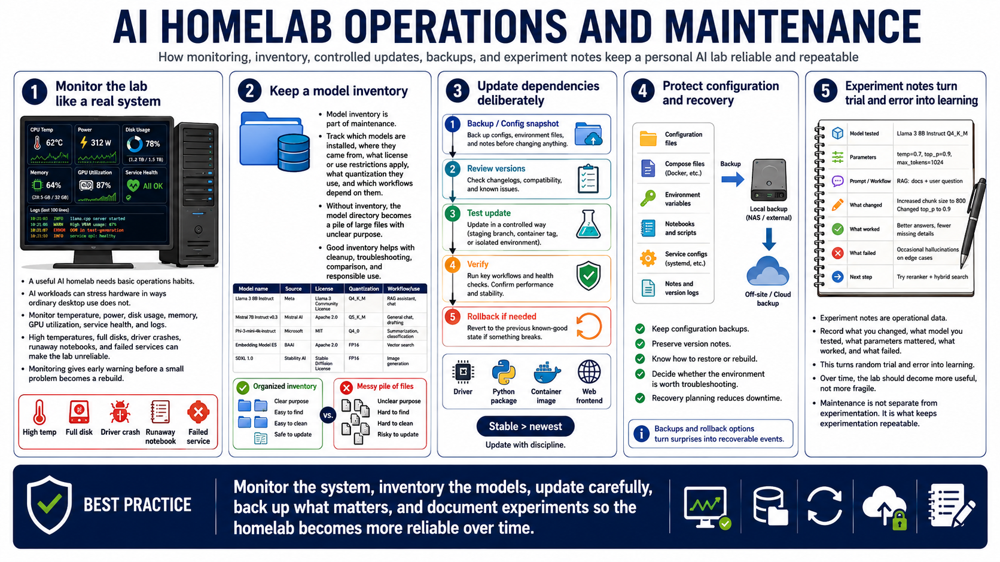

Operations, Monitoring, and Maintenance
Connecting to LMS... Progress: in progress

Narration
A useful AI homelab needs basic operations habits. Monitor temperature, power, disk usage, memory, GPU utilization, service health, and logs. AI workloads can stress hardware in ways ordinary desktop use does not. High temperatures, full disks, driver crashes, runaway notebooks, and failed services can make the lab unreliable. Monitoring gives you early warning before a small problem becomes a rebuild.
Model inventory is part of maintenance. Keep track of which models are installed, where they came from, what license or use restrictions apply, what quantization they use, and which workflows depend on them. Without inventory, the model directory becomes a pile of large files with unclear purpose. Good inventory helps with cleanup, troubleshooting, comparison, and responsible use.
Dependency updates should be deliberate. AI tooling changes quickly, and a working stack can break after a driver, Python package, container image, or frontend update. Configuration backups, version notes, and rollback planning keep updates from becoming one-way trips. If an upgrade fails, decide whether to troubleshoot or rebuild based on the value of the current environment, the quality of documentation, and the time required to recover.
Experiment notes are operational data. Record what you changed, what model you tested, what parameters mattered, what worked, and what failed. This turns random trial and error into learning. Over time, the lab should become more useful, not more fragile. Maintenance is not separate from experimentation. It is what keeps experimentation repeatable.